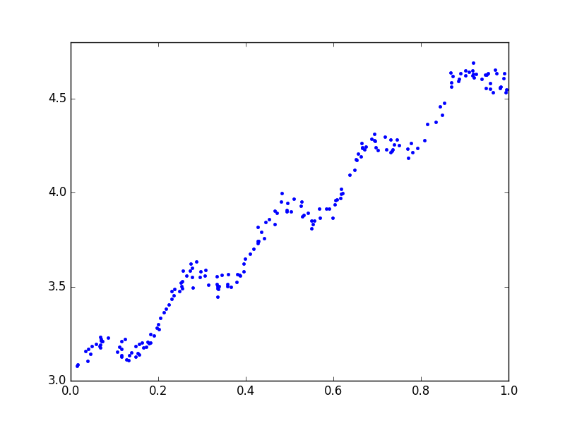
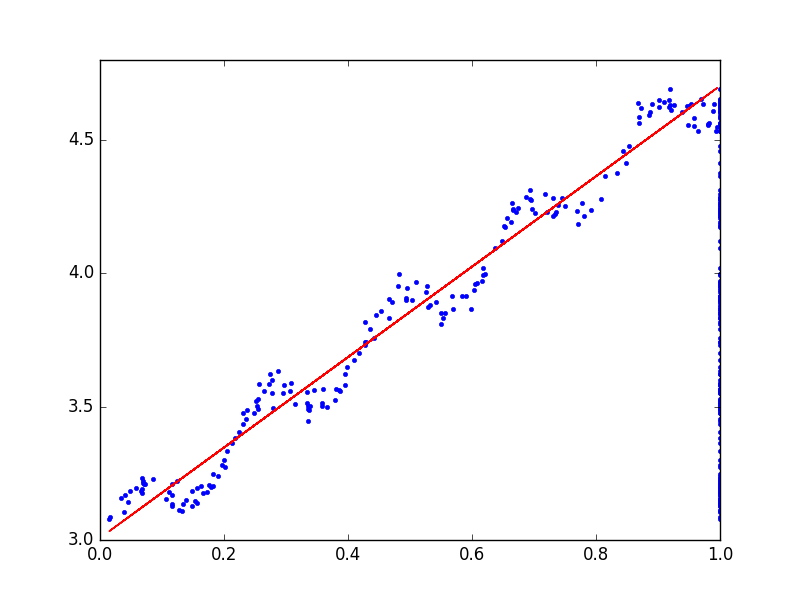

一元线性回归
在机器学习中，线性回归被用来对连续型数据进行预测，来确定两种或者两种以上变量间的相互关系。本篇博客介绍线性回归的最简单的一种情况——一元线性回归。如下图，现在我们在图上画一系列的点，然后打算花一条线，这些点到这条线的距离尽可能的短。那么该怎么找到这条线了？线性回归就是很好的解决方法。

首先，假设 y 和 x 满足下面的一元线性关系：
这称为线性回归方程，其中$\theta_i$是回归系数。
使用 python 机器学习库 sklearn 来进行一元线性回归实验，实验代码如下：
实验结果图形如下：

可以得出：
此时预测 x=1.2时的值得 : 5.04213041.
源码和实验数据可以去我的 github 上进行下载。
多元线性回归
日常生活中，一个因变量是和多个自变量有关的，比如房价会和房子大小、房子面积、房子的地理位置等因素有关，一元线性关系不足以解决这样的问题，可以使用多元线性来解决。
现有方程：
当 X 可逆时，会有
当 X 不可逆时，上述公式就不成立了。
这是就需要对上式进行转化了:
\begin{align}
Y=X\beta=> X^TY=X^TX\beta \\
\end{align}
由于$X^TX$是可逆的,得
现有示例方程：$y=2+3x_1+4x_2$
X=[[1,1,1],[1,1,2],[1,2,1]]
y=[[9],[13],[12]]
|
|
带入函数，得y=2+3x4+4x5=34, 验证正确。